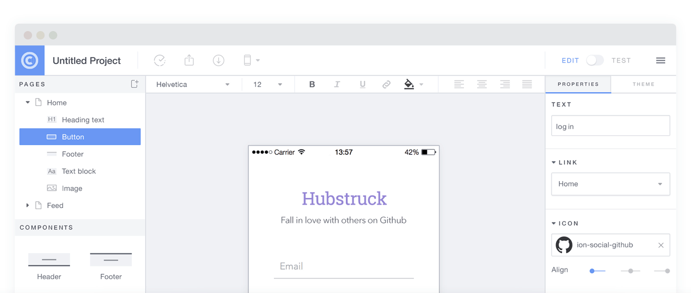

Un Poco de Historia


Problematicas - Principios Años 90
- Incrmento del contenido
- Webs más complejas (Formularios)
- Conexiones muy lentas
Solucion - Lenguage Client Side
En 1993 Brendan Eich un programador de Netscape crea JavaScript, un lenguage de scripting creado para ser ejecutado en el browser.
y Miscrosoft?

- Miscrosoft crea JScript, su "propio" lenguage client side para su browser Internet Explorer
- Netscape decide normalizar el lenguage a traves de ECMA
- Se crea la especificacion ECMAScript
ECMAScript
- Estandarizacion y especificacion para un lenguage de script multiplataforma e independiente.
- Version 1: 1997
- Version 5: 2009 (Actual)
- Version 6: Se espera para mediados de 2015
Que es JavaScript?
El Lenguage del Browser?
- Antiguamente era el lenguage del browser, hoy podemos encontrarlo en en el servidor y hasta en Base de Datos.
- Es un lenguage de script, interpretado y multiplataforma
- Nos enfocaremos en Client Side JavaScript
Client Side JavaScript
Se ejecuta e intrepreta en el browser.
Nos proporciona objetos para controlar e interactuar con el browser y con el DOM.
Nos permite agregar dinamismo e interactuar con nuestros sitios o aplicaciones web.
Que NO es JavaScript?

NO es:

- JAVA
- Flash
- jQuery
- AJAX
Caracteristicas
- Liviano
- Interpretado (NO se compila)
- Orientado a Objetos (No use clases, usa protitpos)
- Multiplataforma
- Tipado Dinamico
- Sinxtaxis simple, similar a JAVA, C, C#
Para que sirve?
- Interactuar con el DOM, modificar y manejar HTML y CSS
- Interceptar y maniuplar eventos de usuario y del browser
- Cambiar contenido (Sin necesidad de refresh)
- Manipular cookies y almacenar informacion en el browser
- Efectos, transiciones, animaciones
- Validar formularios
- Peticiones AJAX
- Aplicaciones Web Mediana y Altamente Complejas (SPA)
- Integrar APIS de Terceros (Facebook, Twitter, GitHub)
- Y muho mas...
“PhoneGap drastically lowers the bar when it comes to knowledge required to build a cross-platform mobile application. As a side affect of this, the number of novice developers building mobile applications has increased dramatically.
Just because PhoneGap lowers the bar doesn't mean it removes it completely.”
- Brock Whitten
Phonegap doesn't suck, you suck

Ventajas de apps híbridas
- Código fuente único
- Menor tiempo de desarrollo
- Más baratas
- Ya no es 2007, dispositivos más potentes
Por qué Ionic?
Ionic y el público
- Top 60 con más estrellas en Github
- Ionic CLI se descarga promedio 3000 al día
- 120.000+ Ionic apps se iniciaron desde su CLI
- Alpha: Noviembre 2013
- Beta: Marzo 2014
- 1.0: Diciembre 2014
AngularJS

Ahorro de tiempo
- No necesito incluir fastclick.js
- No necesito handlebars.js/mustache.js
- Animaciones CSS ya disponibles
Performance
- Manipulación del DOM mínima
- Nada de jQuery (se puede incluir si uno quiere)
- Animaciones hardware accelerated
Ionicons

Over 600 MIT licensed font-icons included
ngCordova

AngularJS wrapper a muchos plugins de Cordova
Ionic Creator

_ _
(_) (_)
_ ___ _ __ _ ___
| |/ _ \| '_ \| |/ __|
| | (_) | | | | | (__
|_|\___/|_| |_|_|\___| CLI
$ npm install -g ionic
$ ionic start myapp blank/tabs/sidemenu
$ ionic start myapp codepen/github
$ ionic serve
$ ionic run android -l -c -s

Listas

Listas complejas
- Directivas AngularJS
- Botones al hacer swipe
- Reordenamiento
- Borrado

{{ item.name }}
{{ item.quote }}
Collection Repeat
- Similar a
ng-repeat - Scrollear por miles de items
- Solo hace render de los items visibles
- Buena performance en memoria
{{ c.name }}
{{ c.email }}

Tabs
- Vistas anidadas
- Cada tab tiene su propia history


Slide Box
Slide 1
Slide 2
Slide 3

Action Sheet
$ionicActionSheet.show({
titleText: 'Modify your album',
buttons: [
{ text: 'Share' },
{ text: 'Move' },
],
destructiveText: 'Delete',
cancelText: 'Cancel',
buttonClicked: function(index) {
console.log('BUTTON CLICKED', index);
return true;
}
});
Pull to Refresh
Navegación
- Muestra el boton de volver cuando es necesario
- Cada tab tiene su propia stack history
- Funciona con el botón volver de Android
Back
MIT LICENSED
Free to use (even commercially)
COMUNIDAD ACTIVA
Para empezar
Videos, tutorials y formulas
learn.ionicframework.com
Visita el foro de la comunidad
forum.ionicframework.com
Contribuir en GitHub
github.com/driftyco/ionic